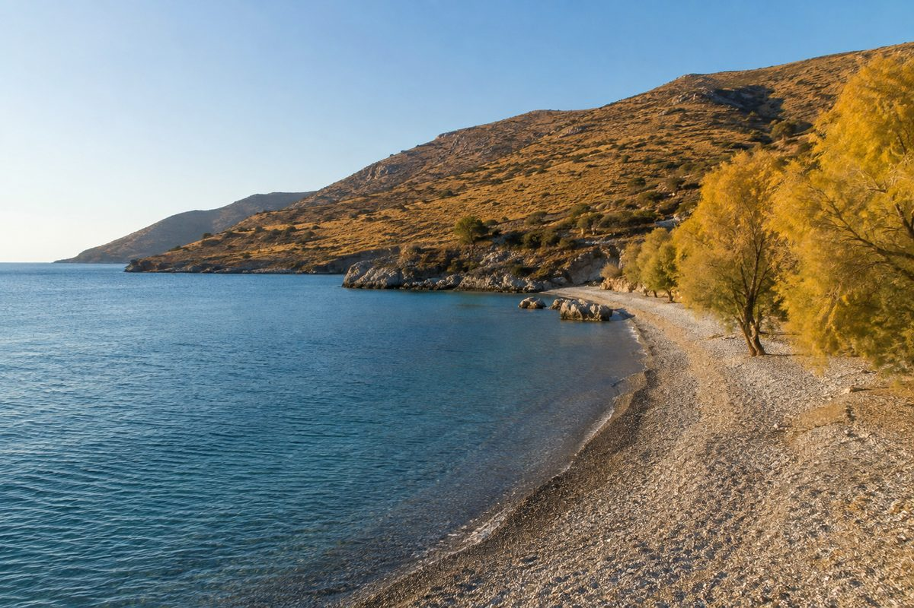
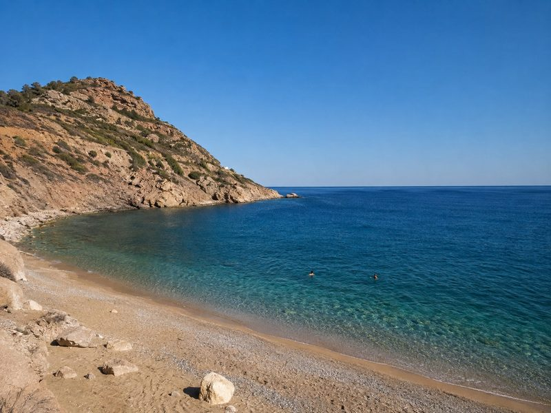
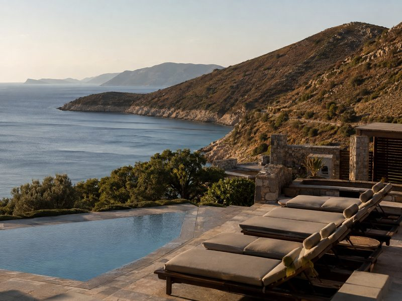
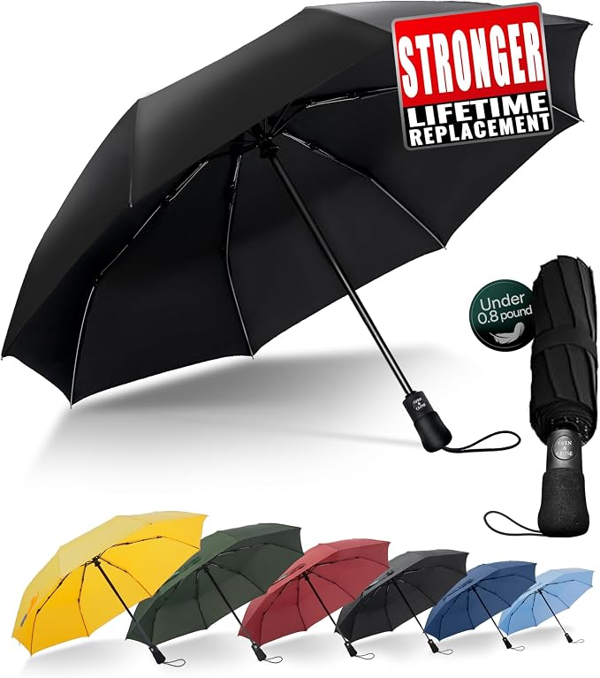
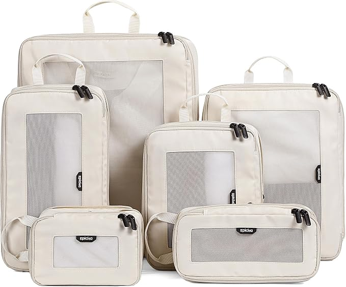

By October, the busiest weeks may be over while the sea is still carrying summer heat, making a cooler afternoon easier to use than the same-temperature day in June. The catch is that restaurants, ferries and mountain lifts follow their own closing dates, so the thing that ends your trip may be a timetable rather than the weather.
As an Amazon Associate I earn from qualifying purchases. Links below are affiliate links (#ad) - they cost you nothing extra. Nothing here is a paid placement, and no brand sees this page before it goes up.
A Mediterranean bay in October can look quieter while the water has changed far less than the air. That makes the useful comparison with June less obvious than the calendar suggests: if the afternoon air is around 20°C, the sea may still be carrying warmth from the preceding summer, while the same air temperature in June follows a cooler spring.
The photograph pair makes the practical difference visible. In August, the heat pushes the middle of the day towards shade or water; in October, cooler air makes the afternoon usable again while the sea appears barely changed. Do not plan around the phrase "summer weather": check the sea temperature as well as the air forecast, and decide in advance whether you need swimming conditions or simply a comfortable coastal walk.

If foliage is part of the trip, moving uphill can change the timing more dramatically than moving south. A valley and a mountain viewpoint in the same region can be at different stages of autumn, so a town's latitude is not enough information when the real target is colour.
Treat altitude as a date-shifter when choosing a route: compare places separated by at least 500m of elevation, then check current local foliage reports before committing to a particular walk. This also prevents a common mistake in October: assuming that travelling farther south will solve a timing problem that could have been solved by choosing a lower trail.
Seasonal businesses rarely use the weather as their closing signal. A restaurant may finish its season while afternoons remain pleasant, a ferry can switch to a reduced timetable, and a mountain lift can stop running while the slopes are still worth visiting on foot.
Check the last ferry, not just the route. Write down the final sailing for the day you intend to travel and keep a land-based alternative if that sailing is before 22:00. A beautiful October crossing is not useful if the return journey has already ended for the season.
Check the closing date for every seasonal business. Confirm the restaurant, lift or attraction is operating on your exact date, not merely somewhere in October. If your trip depends on one opening, treat a closing date of 10 October differently from one of 31 October.
Check the afternoon forecast before choosing the day's plan. If the forecast is around 20°C, put walking and sightseeing into the cooler afternoon rather than copying an August timetable that sends you indoors at midday. The point of October is not to recreate summer; it is to use the hours that summer heat makes inconvenient.

Our illustration of the general look, not the actual placeThis suits the central October trade-off: quieter coastal days without assuming the sea has cooled as quickly as the air. Before booking, check the actual sea temperature for the destination and the operating dates of anything you need nearby. It is not for travellers whose priority is guaranteed midsummer heat or a fully open seasonal timetable.
Best for: Sea swimming without summer crowds
View October stays →paid link
October weather can turn a pleasant coastal afternoon into an awkward one when wind and rain arrive together. Before buying, check that the umbrella's dimensions suit your day bag and that its windproof design fits how exposed your planned walks will be. It is not for people who will spend most of their time in strongly exposed coastal conditions where carrying an umbrella is impractical.
Best for: Breezy showers and light October rain
Shop umbrella on Amazon →paid link
October trips often need a mixture of lighter clothes, rain protection and warmer layers, so packing can become awkward when the day shifts between coast and higher ground. Before buying, check that the cube sizes match your luggage and that compression will actually help with the layers you intend to carry. They are not for travellers with plenty of luggage space who do not need to organise changing layers.
Best for: Travellers packing light for coastal breaks
Shop cubes on Amazon →paid linkFirst, choose the exact October dates and check the sea temperature, afternoon forecast and seasonal closing dates for the places you cannot replace. Then build the itinerary around what is actually operating, using the cooler afternoon rather than trying to force an August schedule onto October.
We look for pieces that change how a small room works, not the cheapest option and not the most photographed one. Everything here has to survive a rental: no drilling, no permanent fittings, nothing that needs a second person to install.
Room images on this site are our own illustrations, not photographs of the products. We link to the retailer so you can see the real item.
Written and selected by Rooms and Roads · Updated August 2026 · links checked August 2026